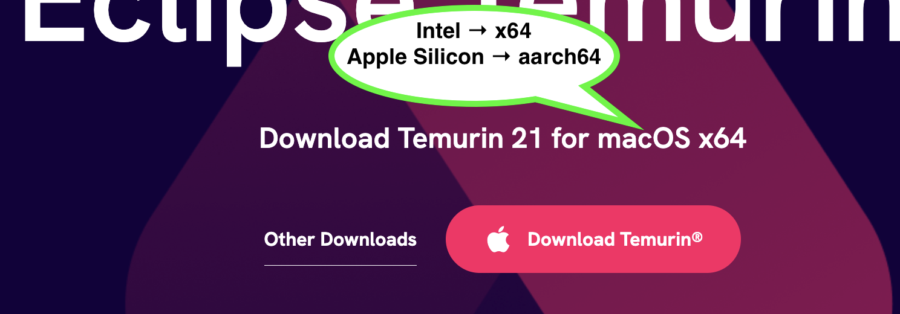

The adoptium homepage will have a big download button. It usually offers the installer for the correct processor.
⚠️ Double check the offered installer: Intel Macs should get the "x64" version, and Apple Silicon Macs should get the "aarch64" version.
.PKG installer.
Open/run the installer when it is done downloading.
Go through the installation process accepting all the defaults.
Now you have a Java compiler. Next we'll install an IDE to edit and work with Java code.